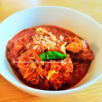

Beef Curry

Description
This is a classic dish in Burma, it brings out a lot of my childhood
memories. My mother used to serve this with coconut rice and onion salad.
Typically, this dish will be covered with oil (also called Si Pyan). This
is improvised, less oil but more onions.
Ingredients
- Beef skirt 1 kg cubed
- Garlic 4 large cloves, chopped
- Onions 6 large onions coarsely chopped
- Lemon half
- Turmeric a teaspoon
- Salt a teaspoon or to your tasting
- Cooking oil 4 dessert spoons
- Paprika 1 dessert spoon
- Hot chilli powder a teaspoon or to your tasting
- Beef stock 1 dessert spoons (knorr concentrated stock)
- Fish sauce 4 dessert spoons (to taste)
- Fried shallots a generous handful
- Fresh chillies 2 roughly chopped
Steps
-
Marinate the beef in the lemon, turmeric, salt and stock. The longer you
can leave it, the better; overnight if possible.
- Preheat the oven to 160° Celsius.
-
Use medium size sauce pan for this. Fry the onions, garlic, paprika and
extra hot chilli powder.
- Add water, cover and let it simmer for 5 mins.
- Add the beef and stir until coated.
- Let it simmer for further 7 mins.
- Stir once in a while to make sure nothing sticks to the bottom.
-
Make sure there is enough liquid before cooking in the oven for 90
minutes, check it halfway to make sure it’s not too dry.
-
Reduce if necessary once it is out from the oven, this should have a
think gravy, not watery.
- Garnish with fresh chilies and fried shallots.